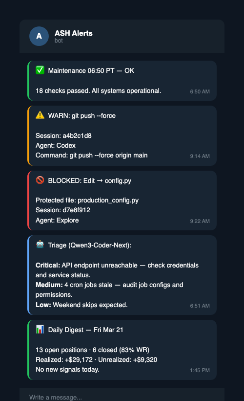

Security and Guardrails¶

Audit hook¶
The harness logs tool use at the boundary where actions happen. Claude Code calls a PreToolUse hook before a tool runs and a PostToolUse hook after it returns. One Python script, scripts/guardrails/agent_audit_hook.py, handles both events by switching on the hook type in the JSON payload.
Each tool call becomes one JSONL record. The record includes a timestamp, session ID, agent ID or type, tool name, target file path when one exists, block or warning status, and a short command snippet for shell commands. That log is the forensic record. It answers who touched what, when they touched it, and whether the harness allowed it.
The system also keeps a separate error log for hook failures. That matters because the audit layer should not hide its own bugs inside the main log stream.
Protected file blocking¶
Some files are too dangerous to edit through an agent loop. The hook hard-blocks Edit, Write, MultiEdit, and related write tools when the target resolves to the primary production script, the critical daemon, the hook script itself, .env, settings.json, or secret-bearing paths that match *.key, *.pem, or *.secret.
The block happens on the resolved path, not the path string the agent typed. The hook runs every candidate through os.path.realpath first. That closes the easy symlink trick where a harmless-looking path points at a protected file.
The exit code matters too. The hook returns exit code 2 for a hard block. That lets the caller distinguish a deliberate deny from a crash.
Bash bypass detection¶
Blocking editor tools is not enough if the agent can write through Bash. That was the main gap uncovered in review.
The hook now parses shell commands for write patterns aimed at protected files. It resolves redirect targets such as > and >>. It inspects tee, mv, cp, and install. It catches sed -i. It looks for python -c snippets that call open() in a write mode. It also catches heredoc flows when the shell redirects the heredoc output into a protected path.
That closes the obvious bypass. An agent cannot avoid the deny list by switching from Edit to Bash and hoping no one notices.
Alerts and throttling¶
Blocks and warnings send Telegram alerts. The hook starts a non-daemon thread for the send, then joins pending threads before exit. That design fixes a small but common failure: the process exits before the HTTP request completes, so the alert never leaves the machine.
The hook also throttles alert spam. It keys alerts by the first line and applies a five-minute cooldown to each unique type. If the same block fires ten times in a loop, the operator sees one alert, not ten.
External content sanitization¶
Outside content enters the system as hostile by default. X posts and other fetched text can carry prompt injection, fake instructions, or garbage that looks plausible in a model context window.
The harness routes that content through scripts/sanitize_external.py. That script sends the text to a local GLM model running in Ollama with no tools, no file access, and no network. The model gets one job: summarize the content and ignore embedded instructions. If sanitization fails, the script wraps the raw content in explicit untrusted markers instead of passing it through as normal context.
That sandbox matters. Even if the outside text says "run this command" or "ignore your prior rules," the model receiving it has no way to act on the instruction.
Secret scanning¶
A security audit found 908 API keys across 32 Claude Code session transcripts. Keys from every integrated service (Anthropic, Telegram, execution APIs, research APIs, GitHub) had leaked into conversation logs through normal tool use. A model reads a .env file, the key appears in tool output, the tool output gets persisted in a transcript, and the transcript sits on disk indefinitely.
That incident drove three layers of secret defense.
Layer 1: Pre-commit scan. The scripts/guardrails/secret_scan.py module defines regex patterns for every secret type the workspace touches. The pre-commit hook in run_guardrails.py runs those patterns against the staged diff. If a secret appears in any added line, the commit is rejected with the pattern name, a truncated match, and the line number. The developer fixes the leak before the secret reaches git history. A bypass marker (openclaw: allow-secret-fixture) exists for files that legitimately contain pattern strings, such as the scanner's own regex definitions.
Layer 2: PostToolUse masking. A hook script (scripts/guardrails/output_secret_filter.sh) runs after every Bash tool call. It reads the tool output, scans for the same secret patterns, and replaces matches with [REDACTED:LABEL] before the output reaches the conversation context. If a model runs cat .env, it sees masked values, not real keys. The hook logs masked events to logs/secret_filter.log for audit, but never logs the actual secret values.
Layer 3: Transcript scrubbing. The session cleanup script (maintenance/session_cleanup.py) runs a final scrub when archiving old transcripts. Any secrets that slipped through layers 1 and 2 get replaced with redaction markers. This is the backstop. It handles the gap between "we added scanning" and "scanning existed when the transcript was written."
Each layer catches what the previous one missed. The pre-commit scan stops secrets from entering git. The PostToolUse hook stops them from entering conversation context. The transcript scrub cleans up historical leaks. No single layer is sufficient because secrets enter the system through different paths at different times.
Workspace sandbox¶
The audit hook enforces a filesystem sandbox. The agent can write inside the workspace directory and /tmp. Everything else is blocked by default.
This matters most when the agent runs with permissions skipped, such as through the Telegram proxy where no human is present to approve or deny tool calls. Without a sandbox, an agent could write to ~/.ssh/authorized_keys, drop a launch agent that runs on boot, modify shell profiles to inject commands, or edit system configuration files. None of these would trigger a permission prompt because permissions are bypassed. The sandbox catches them at the hook level instead.
The sandbox checks every resolved file path against an allowlist and a blocklist. The blocklist takes priority. Paths on the blocklist are always blocked, even if they fall inside an allowed directory. Paths not on either list are blocked if they fall outside all allowed directories.
Blocked paths include home directory dotfiles (~/.zshrc, ~/.bashrc, ~/.gitconfig, ~/.ssh/), macOS application support directories (~/Library/LaunchAgents/, ~/Library/LaunchDaemons/), and system directories (/etc/, /usr/, /bin/, /sbin/, /System/, /Library/, /var/, /opt/).
The sandbox applies to both direct file writes (Edit, Write) and Bash commands that target paths outside the allowed zone. The same command parsing that catches protected file bypasses also catches sandbox violations. An agent that tries echo "bad" >> ~/.zshrc through a Bash tool gets blocked the same way as one that tries to Edit the file directly.
A sandbox violation produces a hard block (exit code 2), a JSONL audit log entry, and a Telegram alert with the full resolved path. The alert tells the operator exactly what the agent tried to reach and which session attempted it.
Deny list¶
The repo-level .claude/settings.json carries a permission deny list. It blocks commands that are destructive, history-rewriting, or common vectors for accidental damage.
Blocked categories:
- Destructive deletion:
rm -rf /,rm -rf ~,rm -rf .,git clean -fd - History rewriting:
git push --forceand--force-with-leaseto main or master,git reset --hard origin/* - Shell eval patterns:
eval,bash -c,sh -c,/bin/bash -c,/bin/sh -c - Pipe-to-shell installs:
curl ... | sh,wget ... | bash - Permission escalation:
chmod 777 - Dotfile writes: redirects to
~/.ssh/,~/.zshrc,~/.bashrc,~/.zprofile,~/.openclaw/.env
The deny list does not block reads. It does not block normal git operations, Python execution, or file editing inside the workspace. The goal is to prevent irreversible mistakes, not to create friction for normal work.
Critical path protection¶
Pre-commit guardrails enforce acknowledgement gates on files where a bad edit has outsized consequences.
Three categories of protected paths exist:
-
Live production execution. The primary production script, the critical daemon, and the shell scripts that launch them. These run in cron during operational hours. A syntax error here means missed actions or orphaned state. These were the original protected paths.
-
Configuration and hooks. Crontab files,
.claude/settings.json,.githooks/pre-commit, and guardrail scripts. A bad edit to the deny list could silently remove protection. A broken pre-commit hook could disable secret scanning. -
Cron wrappers. The shell scripts that launch automated tasks, monitors, and maintenance jobs. These are the glue between crontab and Python. If one silently fails, a production daemon stops running and nobody notices until the next health check.
All three categories require an explicit acknowledgement environment variable to commit. That variable is not set by default. The developer must explicitly acknowledge the risk.
A fourth category (protected path warnings) covers scripts/guardrails/, .claude/, and .githooks/ directories. Changes here print a warning but do not block the commit. The warning exists so that a reviewer scanning the commit output does not miss a guardrail change buried in a large diff.
Stop hook¶
The Stop hook (scripts/guardrails/pipeline_stop.sh) runs when a Claude Code session ends. It checks the git working tree for uncommitted changes and prints reminders if pipeline gates were likely skipped.
If Python files changed but no py_compile evidence exists in the session, it reminds to verify. If production paths changed, it reminds to review the diff. If guardrail or settings files changed, it flags the security implication.
The hook is advisory. It prints reminders and exits cleanly. It never blocks session exit. The value is catching the case where a developer says "I'll commit later" and forgets that the changed code was never verified.
Fail-open design¶
The audit system fails open on infrastructure bugs. If the hook crashes, it logs the traceback to a separate file and returns a non-blocking code unless it was a deliberate deny. Claude Code continues the tool call. That tradeoff is deliberate. A broken audit hook should not kill a session in the middle of production work. The system prefers stable operation with an error log over a dead session with perfect intentions.